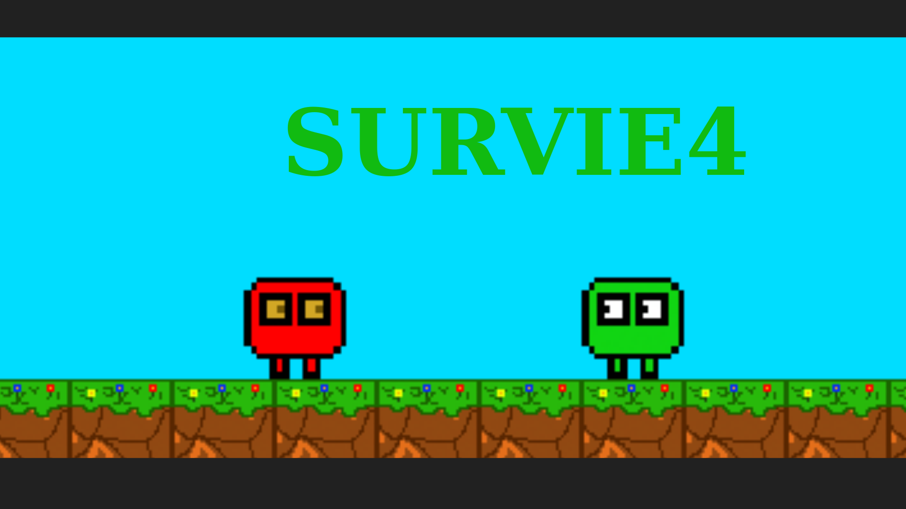

Mes Projets Académiques

Refonte d'Éditeur d'Emploi du Temps - IUT de Montreuil
Projet de groupe pour refondre un éditeur d'emploi du temps, impliquant la conception et le développement avec Flask et Angular. Rôle actif dans les phases de conception, développement back-end et front-end, ainsi que dans le DevOps.
Voir le Projet sur GitHub

Terraria Like en Java
Réalisation d'un jeu de type Terraria en Java. Le but du jeu est de farmer des ressources, construire des armes, et survivre aux vagues de zombies.
Voir le Projet sur GitHubPokedex en Angular
Réalisation d'un Pokedex utilisant Angular, offrant une interface utilisateur interactive pour parcourir et afficher des informations sur divers Pokémon.
Voir le Projet sur GitHubApplication de Gestion de Commandes de Burgers
Cette application Android permet la gestion de commandes de burgers, offrant une interface utilisateur intuitive pour passer et suivre les commandes.
Voir le Projet sur GitHub